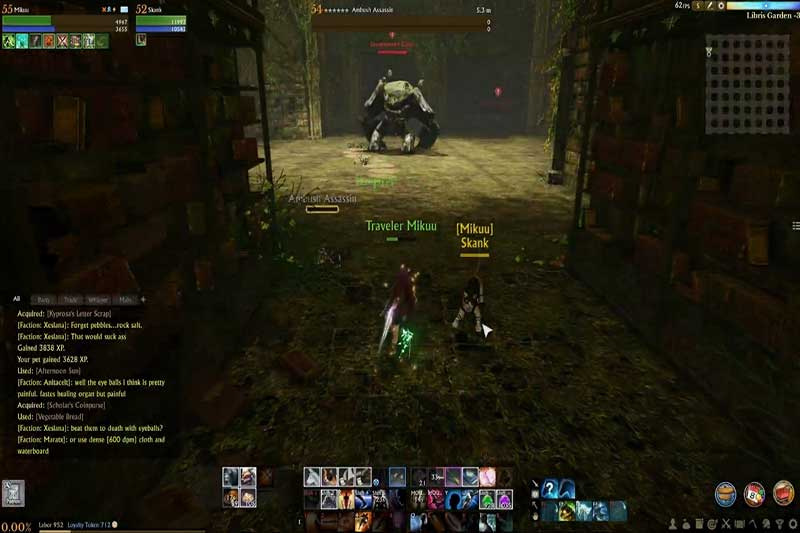

MMORPG stands for massively multiplayer online role-playing game. Within an MMORPG anybody capable of controlling a player in which they take the form of within a virtual or fantasy world , could be considered playing an MMORPG. MMORPG's can be played on a multitude of mediums, ranging from console video game platforms too computers themselves. Over the years more and more game developers realized that these types of games can span over years of gameplay with such massive communities building within the games itself.
Within most MMORPG's users will recieve a large interface (seen below in archage screenshot) which often features a large amount of skills for the player to use within the game. These skills can be used for attacking npcs (non player characters) for experience to help level their characters up, and these skills can be also used for defensive purposes.
When players meet other players within the game of their choice , there is often a "friends list" of some sort where the user can keep track of players they enjoy playing with and can be able to play again. Sometimes if there is a very large group of players that all get along they could create something called a "guild" , in other words just a large group of friends that complete various tasks together.
Overall within MMORPG's players can level up their own personal characters and meet new friends along the way to take out various monsters in order to level up. It's quite the journey in my opinion.
